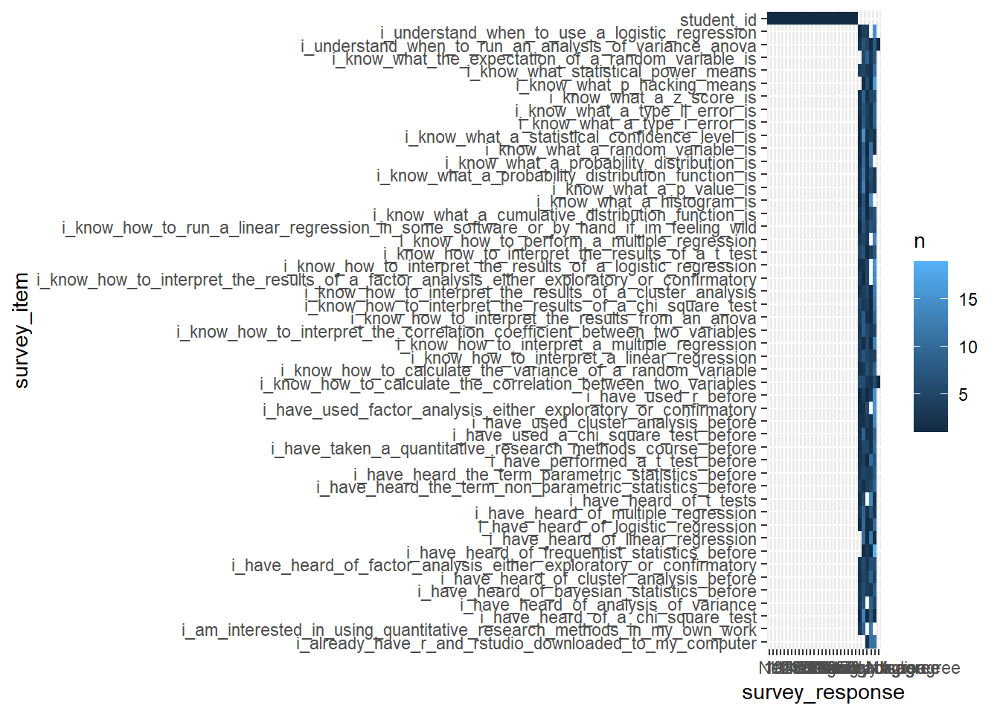
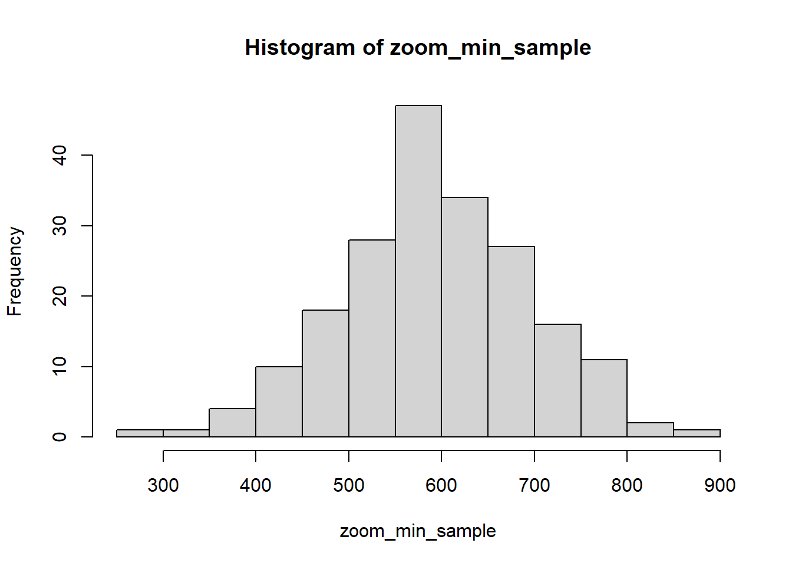
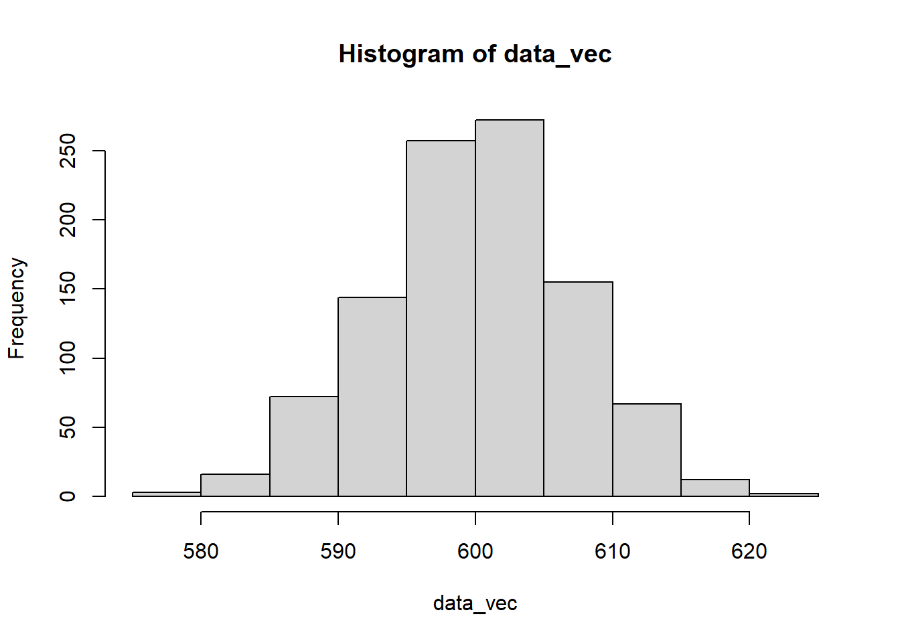

Chapter2 Week 2: Intro stats, Data & Distributions, Intro R & RStudio
This week, we discuss some very basic ideas related to statistics, data, and working in R.
2.1 First steps in R
We can create a new variable by assigning it a value with the <- operator. Let’s create a vector of numbers 1 to 10 with the seq() function and then a separate vector that takes each of the x values, multiplies it by 2, and adds 3.
x <- seq(1:10)
y <- 2* x + 3Just to make sure everything worked as expected, we can then just type x and y and R will print their values. We could also look in the “environment” window to see whether those variables (and their expected values) were actually created.
x## [1] 1 2 3 4 5 6 7 8 9 10y## [1] 5 7 9 11 13 15 17 19 21 23So far, so good. If we want to quickly visualize this, we could create a simple scatter plot with the plot() command (note: we will come back to plotting data much more in week 3).
plot(x, y)2.2 Getting your R environment set up
One of the first things you will have in any script or .rmd file is a section to load all the libraries that you use in that script.
You can install a library by using the install.packages() function, for example:
install.packages("tidyverse"), install.packages("janitor"), and install.packages("psych")
with this installed, you can then load the package using the library() function
library(tidyverse)## -- Attaching packages --- tidyverse 1.3.0 --## v ggplot2 3.3.2 v purrr 0.3.4
## v tibble 3.0.3 v dplyr 1.0.0
## v tidyr 1.1.0 v stringr 1.4.0
## v readr 1.3.1 v forcats 0.5.0## -- Conflicts ------ tidyverse_conflicts() --
## x dplyr::filter() masks stats::filter()
## x dplyr::lag() masks stats::lag()library(janitor)## Warning: package 'janitor' was built under R version 4.0.3##
## Attaching package: 'janitor'## The following objects are masked from 'package:stats':
##
## chisq.test, fisher.testlibrary(psych)##
## Attaching package: 'psych'## The following objects are masked from 'package:ggplot2':
##
## %+%, alpha2.3 Reading in data
A good first step when working in R is to check which directory you are working in with the getwd() function. You should get a directory in response.
getwd()## [1] "C:/Users/akatz4/Desktop/test_course_note"You can also check which files are in that directory with list.files().
list.files()## [1] "_book"
## [2] "_bookdown.yml"
## [3] "_bookdown_files"
## [4] "_output.yml"
## [5] "01-Week_01.Rmd"
## [6] "02-Week_02.Rmd"
## [7] "03-Week_03.Rmd"
## [8] "04-Week_04.Rmd"
## [9] "05-Week_05.Rmd"
## [10] "06-Week_06.Rmd"
## [11] "07-Week_07.Rmd"
## [12] "08-Week_08.Rmd"
## [13] "book.bib"
## [14] "ChildAggression.dat"
## [15] "docs"
## [16] "ENGE_5714_2021_pre_survey.csv"
## [17] "Free Reduced Lunch by Schools and Grade Structures 2008-2017_final.csv"
## [18] "index.Rmd"
## [19] "packages.bib"
## [20] "preamble.tex"
## [21] "README.md"
## [22] "RExam.dat"
## [23] "seniorsurvey.csv"
## [24] "student_happiness.csv"
## [25] "style.css"
## [26] "survey_student_info.csv"
## [27] "test_course_note.Rproj"
## [28] "test_course_notes.Rmd"
## [29] "test_course_notes_files"If you notice that the file you are looking for is not there, then you can use setwd() to change your working directory
setwd("./Week 2/")
After that, make sure you have switched to the correct working directory
getwd() and then list.files().
Assuming you have directed yourself to the correct place, you can now read in the file(s) that you want to be working with. There are a lot of ways to do this. Since we will be spending a lot of time in class working with .csv files, we will focus on using the read_csv() function from the readr package (part of the tidyverse collection of packages). This function will read in the .csv file and store the data as a tibble (a tidyverse version of a data frame, which we can think of as a collection of observations stored in rows with values for variables for each observation stored in columns).
prior_survey <- read_csv("ENGE_5714_2021_pre_survey.csv")## Parsed with column specification:
## cols(
## .default = col_character(),
## student_id = col_double()
## )## See spec(...) for full column specifications.2.4 Exploring the data
Now that we have loaded in the data, let’s take a look at the csv. If we just run a line with the name of the tibble - i.e., prior_survey then we should receive a printout that shows the first several rows of that tibble and a listing of all the columns, along with the data types (i.e., double for numeric values, character for strings, etc) of each column.
prior_survey## # A tibble: 24 x 49
## student_id `I have taken a~ `I am intereste~ `I know what a ~
## <dbl> <chr> <chr> <chr>
## 1 1 Somewhat disagr~ Somewhat agree Strongly disagr~
## 2 2 Strongly disagr~ Neither agree n~ Somewhat agree
## 3 3 Strongly disagr~ Somewhat agree Somewhat agree
## 4 4 Somewhat disagr~ Strongly agree Strongly disagr~
## 5 5 Somewhat agree Strongly agree Somewhat agree
## 6 6 Somewhat disagr~ Somewhat agree Somewhat disagr~
## 7 7 Strongly disagr~ Somewhat agree Strongly disagr~
## 8 8 Somewhat agree Somewhat agree Somewhat agree
## 9 9 Strongly disagr~ Strongly agree Somewhat agree
## 10 10 Neither agree n~ Strongly agree Somewhat agree
## # ... with 14 more rows, and 45 more variables: `I know what a type II error
## # is` <chr>, `I know what a (statistical) confidence level is` <chr>, `I know
## # what a p value is` <chr>, `I know what p-hacking means` <chr>, `I know what
## # statistical power means` <chr>, `I have heard of frequentist statistics
## # before` <chr>, `I have heard of Bayesian statistics before` <chr>, `I have
## # heard the term "parametric statistics" before` <chr>, `I have heard the
## # term "non-parametric statistics" before` <chr>, `I know what a histogram
## # is.` <chr>, `I know what a probability distribution is.` <chr>, `I know
## # what a random variable is.` <chr>, `I know what a probability distribution
## # function is.` <chr>, `I know what a cumulative distribution function
## # is.` <chr>, `I know what the expectation of a random variable is.` <chr>,
## # `I know how to calculate the variance of a random variable.` <chr>, `I know
## # what a z score is.` <chr>, `I know how to calculate the correlation between
## # two variables.` <chr>, `I know how to interpret the correlation coefficient
## # between two variables` <chr>, `I have heard of linear regression` <chr>, `I
## # know how to run a linear regression (in some software...or by hand, if I'm
## # feeling wild).` <chr>, `I know how to interpret a linear
## # regression.` <chr>, `I have heard of multiple regression` <chr>, `I know
## # how to perform a multiple regression` <chr>, `I know how to interpret a
## # multiple regression` <chr>, `I have heard of logistic regression.` <chr>,
## # `I understand when to use a logistic regression.` <chr>, `I know how to
## # interpret the results of a logistic regression` <chr>, `I have heard of
## # t-tests` <chr>, `I have performed a t-test before` <chr>, `I know how to
## # interpret the results of a t-test` <chr>, `I have heard of Analysis of
## # Variance.` <chr>, `I understand when to run an Analysis of Variance
## # (ANOVA)` <chr>, `I know how to interpret the results from an ANOVA` <chr>,
## # `I have heard of a chi-square test` <chr>, `I have used a chi-square test
## # before` <chr>, `I know how to interpret the results of a chi-square
## # test` <chr>, `I have heard of cluster analysis before` <chr>, `I have used
## # cluster analysis before` <chr>, `I know how to interpret the results of a
## # cluster analysis` <chr>, `I have heard of factor analysis (either
## # exploratory or confirmatory)` <chr>, `I have used factor analysis (either
## # exploratory or confirmatory)` <chr>, `I know how to interpret the results
## # of a factor analysis (either exploratory or confirmatory)` <chr>, `I
## # already have R and Rstudio downloaded to my computer.` <chr>, `I have used
## # R before` <chr>When we do this, we see that there are a bunch of columns that have spaces in their names. This is okay (in the sense that R can handle this), but it can be a little frustrating to work with. Let’s try cleaning the column names with clean_names() from the janitor package. This function will replace the spaces in the column names with underscores and make everything lower case. So, a column name like “I have take a statistics course before” will be changed to “i_have_taken_a_statistics_course_before.”
prior_survey <- prior_survey %>% clean_names() # from janitor packageLook at the data in prior_survey again and see if anything looks different (hint: it should).
prior_survey## # A tibble: 24 x 49
## student_id i_have_taken_a_~ i_am_interested~ i_know_what_a_t~
## <dbl> <chr> <chr> <chr>
## 1 1 Somewhat disagr~ Somewhat agree Strongly disagr~
## 2 2 Strongly disagr~ Neither agree n~ Somewhat agree
## 3 3 Strongly disagr~ Somewhat agree Somewhat agree
## 4 4 Somewhat disagr~ Strongly agree Strongly disagr~
## 5 5 Somewhat agree Strongly agree Somewhat agree
## 6 6 Somewhat disagr~ Somewhat agree Somewhat disagr~
## 7 7 Strongly disagr~ Somewhat agree Strongly disagr~
## 8 8 Somewhat agree Somewhat agree Somewhat agree
## 9 9 Strongly disagr~ Strongly agree Somewhat agree
## 10 10 Neither agree n~ Strongly agree Somewhat agree
## # ... with 14 more rows, and 45 more variables:
## # i_know_what_a_type_ii_error_is <chr>,
## # i_know_what_a_statistical_confidence_level_is <chr>,
## # i_know_what_a_p_value_is <chr>, i_know_what_p_hacking_means <chr>,
## # i_know_what_statistical_power_means <chr>,
## # i_have_heard_of_frequentist_statistics_before <chr>,
## # i_have_heard_of_bayesian_statistics_before <chr>,
## # i_have_heard_the_term_parametric_statistics_before <chr>,
## # i_have_heard_the_term_non_parametric_statistics_before <chr>,
## # i_know_what_a_histogram_is <chr>,
## # i_know_what_a_probability_distribution_is <chr>,
## # i_know_what_a_random_variable_is <chr>,
## # i_know_what_a_probability_distribution_function_is <chr>,
## # i_know_what_a_cumulative_distribution_function_is <chr>,
## # i_know_what_the_expectation_of_a_random_variable_is <chr>,
## # i_know_how_to_calculate_the_variance_of_a_random_variable <chr>,
## # i_know_what_a_z_score_is <chr>,
## # i_know_how_to_calculate_the_correlation_between_two_variables <chr>,
## # i_know_how_to_interpret_the_correlation_coefficient_between_two_variables <chr>,
## # i_have_heard_of_linear_regression <chr>,
## # i_know_how_to_run_a_linear_regression_in_some_software_or_by_hand_if_im_feeling_wild <chr>,
## # i_know_how_to_interpret_a_linear_regression <chr>,
## # i_have_heard_of_multiple_regression <chr>,
## # i_know_how_to_perform_a_multiple_regression <chr>,
## # i_know_how_to_interpret_a_multiple_regression <chr>,
## # i_have_heard_of_logistic_regression <chr>,
## # i_understand_when_to_use_a_logistic_regression <chr>,
## # i_know_how_to_interpret_the_results_of_a_logistic_regression <chr>,
## # i_have_heard_of_t_tests <chr>, i_have_performed_a_t_test_before <chr>,
## # i_know_how_to_interpret_the_results_of_a_t_test <chr>,
## # i_have_heard_of_analysis_of_variance <chr>,
## # i_understand_when_to_run_an_analysis_of_variance_anova <chr>,
## # i_know_how_to_interpret_the_results_from_an_anova <chr>,
## # i_have_heard_of_a_chi_square_test <chr>,
## # i_have_used_a_chi_square_test_before <chr>,
## # i_know_how_to_interpret_the_results_of_a_chi_square_test <chr>,
## # i_have_heard_of_cluster_analysis_before <chr>,
## # i_have_used_cluster_analysis_before <chr>,
## # i_know_how_to_interpret_the_results_of_a_cluster_analysis <chr>,
## # i_have_heard_of_factor_analysis_either_exploratory_or_confirmatory <chr>,
## # i_have_used_factor_analysis_either_exploratory_or_confirmatory <chr>,
## # i_know_how_to_interpret_the_results_of_a_factor_analysis_either_exploratory_or_confirmatory <chr>,
## # i_already_have_r_and_rstudio_downloaded_to_my_computer <chr>,
## # i_have_used_r_before <chr>One other function that will we see more in the future is the table() function, which will create a table with the counts of the values for a variable. For example, if we wanted to quickly know how students answered the “I have taken a quantitative research methods course before” question, we can run the following:
table(prior_survey$i_have_taken_a_quantitative_research_methods_course_before)##
## Neither agree nor disagree Somewhat agree
## 2 5
## Somewhat disagree Strongly agree
## 5 2
## Strongly disagree
## 102.5 Plotting data
We will discuss plotting more next week, but here is a brief preview of what’s to come…
There are multiple ways to plot data. Focusing on using ggplot, here are two.
The first way passes the prior_survey dataframe explicitly to ggplot
ggplot(data = prior_survey, mapping = aes(x = i_know_what_a_type_i_error_is)) +
geom_bar() +
coord_flip()
The second way does this implicitly, using the pipe operator. Note that the results should be the same.
prior_survey %>%
ggplot(mapping = aes(x = i_know_what_a_type_i_error_is)) +
geom_bar() +
coord_flip()
If we wanted to get extra fancy, we could first convert the data from a wide format to a long format and then start plotting all the items together.
Converting to long format would produce something like this:
prior_survey %>%
gather(key = "survey_item", value = "survey_response")## # A tibble: 1,176 x 2
## survey_item survey_response
## <chr> <chr>
## 1 student_id 1
## 2 student_id 2
## 3 student_id 3
## 4 student_id 4
## 5 student_id 5
## 6 student_id 6
## 7 student_id 7
## 8 student_id 8
## 9 student_id 9
## 10 student_id 10
## # ... with 1,166 more rowsThen we can combine that with the group_by() and summarize() functions and plot the results.
prior_survey %>%
gather(key = "survey_item", value = "survey_response") %>%
group_by(survey_item, survey_response) %>%
summarize(n = n()) %>%
ggplot(mapping = aes(x = survey_response, y = survey_item, fill = n)) +
geom_tile()## `summarise()` regrouping output by 'survey_item' (override with `.groups` argument)
This plot is okay for giving a general sense of what is going on in these plots but there are a bunch of other ways to go about doing this.
First, maybe we want to rename the response categories to a numerical scale. We can accomplish this with a mutate() and case_when().
prior_survey <- prior_survey %>%
gather(key = "survey_item", value = "survey_response") %>%
mutate(survey_response_num = case_when(survey_response == "Strongly disagree" ~ 0,
survey_response == "Somewhat disagree" ~ 1,
survey_response == "Neither agree nor disagree" ~ 2,
survey_response == "Somewhat agree" ~ 3,
survey_response == "Strongly agree" ~ 4,
)) Then we plot the same data but with the numerical scale along the x-axis.
prior_survey %>%
group_by(survey_item, survey_response_num) %>%
summarize(n = n()) %>%
ggplot(mapping = aes(x = survey_response_num, y = survey_item, fill = n)) +
geom_tile()## `summarise()` regrouping output by 'survey_item' (override with `.groups` argument)## Warning: Removed 3 rows containing missing values (geom_tile).2.6 Some brief stats
In this week’s reading, there was also discussion about standard errors and the central limit theorem. These are fairly important theoretical concepts to grasp. To some extent they deal with the scenario where you go out and repeatedly sample from a population and calculate a statistic from each of those samples. The distributions of that statistic is what we will call the sampling distribution (as opposed to the sample distribution, which would more accurately describe the distribution of the data that we get in any one sample that we draw from the population).
2.6.1 Central Limit Theorem and Standard Error Demo —-
pop_students <- 10000
zoom_min_pop <- rnorm(n = pop_students, mean = 600, sd = 100)
hist(zoom_min_pop)
zoom_min_sample <- sample(x = zoom_min_pop,
size = 200,
replace = FALSE)
hist(zoom_min_sample)
mean(zoom_min_sample)## [1] 595.3331sd(zoom_min_sample)## [1] 102.2323As a brief aside, let’s review the idea of a loop
num_reps <- 100
data_vec <- rep(NA, num_reps) # this creates an empty vector of size num_reps with NA in each entry
# this loops through the vector starting at position 1 and ending at the final position (num_reps). For demonstration purposes, we replacing the NA in each entry with the number of that entry (i.e., the NA in the 20th entry is replaced with the number 20)
for (i in 1:num_reps){
data_vec[i] <- i
}Okay, so that’s how we create an empty vector and how we loop through its different entries. For this demo, we will also need to remenber how to generate random numbers from a norm distribution with a specified mean and standard deviation.
rnorm(n = 10, mean = 5, sd = 2) # n is the number of random numbers we draw from this normal distribution## [1] 6.569018 7.959722 7.306136 2.840594 8.440812 7.714271 1.296482 6.181196
## [9] 6.803690 3.619418Okay, so that’s not bad. Now, that command will produce a vector with 10 random numbers. We can calculate the mean and standard deviation of those 10 numbers (which should be close to the values that we specified in rnorm() with the mean() and sd() functions.
mean(rnorm(n = 10, mean = 5, sd = 2))## [1] 6.124485sd(rnorm(n = 10, mean = 5, sd = 2))## [1] 1.82359Next, let’s act as if we are drawing a certain sample of size samp_size of data points for num_reps number of times. Keep in mind that, in practice, when we are collecting data ourselves in our own research, num_reps will almost always be 1. We are just demonstrating the underlying assumptions for how we can calculate some of the statistics that we use.
num_reps <- 1000 # specify how many times to take a sample
samp_size <- 200 # specify the size of each sample
data_vec <- rep(NA, num_reps) # create an empty vector of size num_reps with NA in each entry.
for (i in 1:num_reps){
data_vec[i] <- mean(rnorm(n = samp_size, mean = 600, sd = 100)) # store the mean of each of the num_rep samples
}With this, we have a vector data_vec of size num_reps with the mean of each of our samples that we drew. This vector contains our sampling distribution of our sample means. NOTE: The standard deviation of this sampling mean is what we are calling our standard error.
We can plot a histogram of this sampling distribution and calculate the standard deviation of the sampling mean.
hist(data_vec)
sd(data_vec)## [1] 7.144478On your own, try copying this code and changing the num_reps and sample_size variables to larger and smaller values. Focus on how the x-axis values in your histogram change when you change the num_reps and samp_size variables.
Hint: CLT will explain the normal distribution of the sampling mean (the shape you see in the histogram) while the Weak Law of Large Numbers will explain the concentration around the true mean as samp_size increases (i.e., when we draw a larger sample size from the population, our sample mean gets closer to the population mean).
## Quick note on the rep() function: notice what happens when you specify "each" vs "times".
rep(c(1, 2), times = 5)## [1] 1 2 1 2 1 2 1 2 1 2rep(c(1, 2), each = 5)## [1] 1 1 1 1 1 2 2 2 2 2